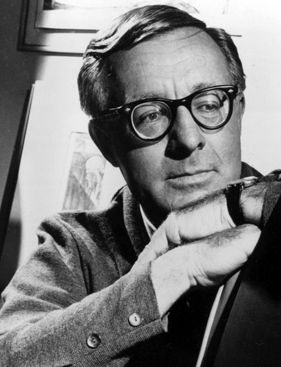
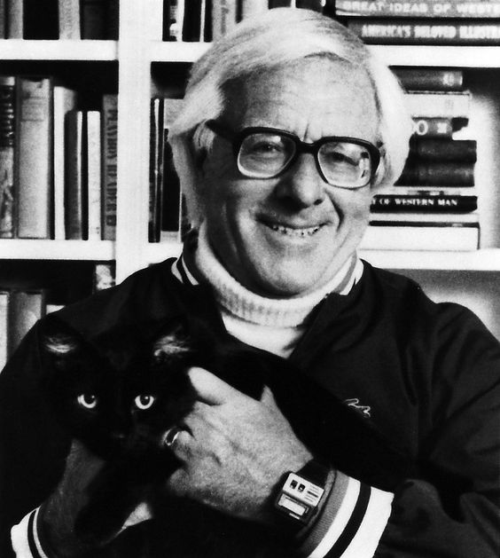
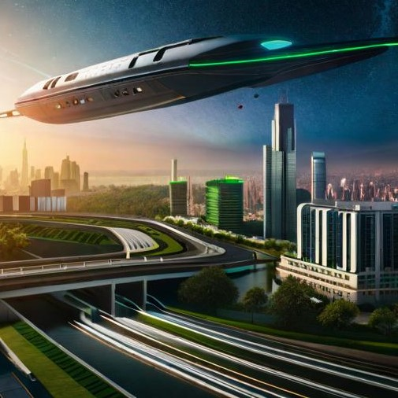
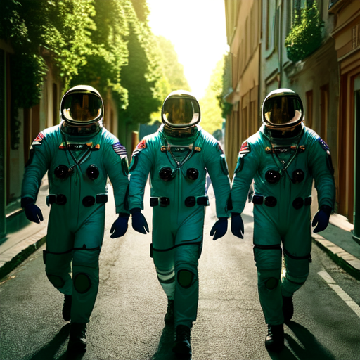
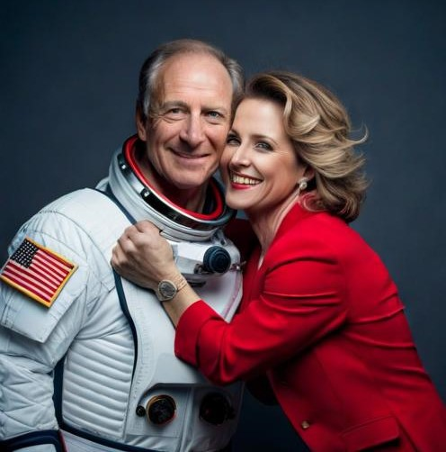
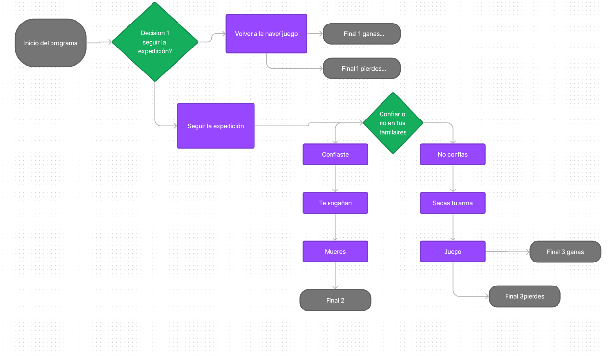
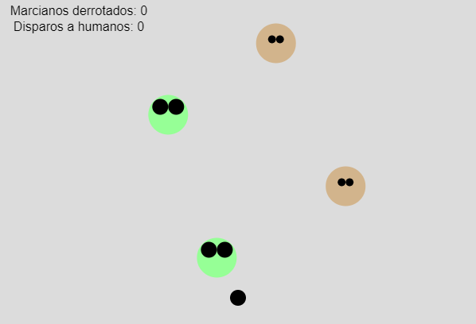
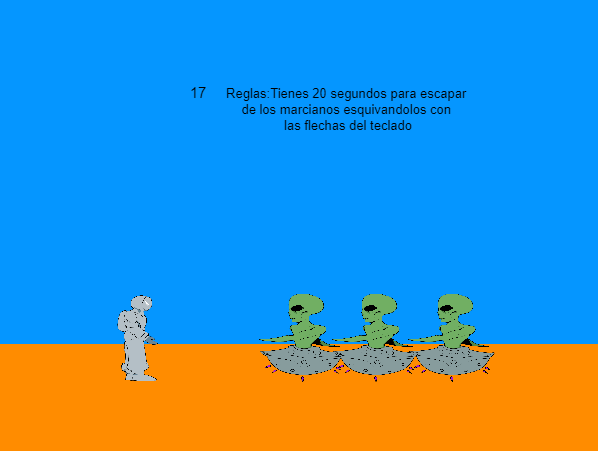
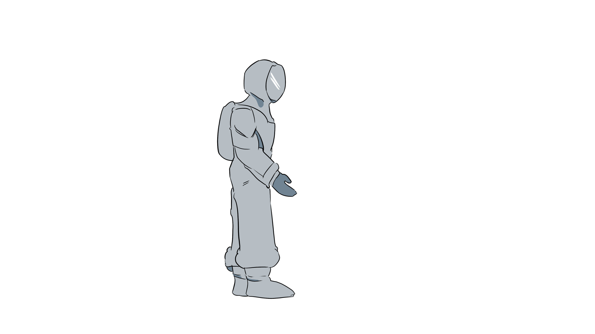
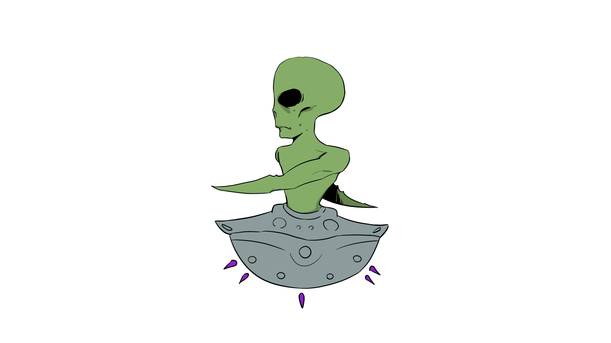

Nuestro juego está basado en el cuento "La tercera expedición" del libro "Cronicas Marcianas" de Ray Bradbury, el cuento en particulartrata sobre astronautas que llegan a Marte y encuentran réplicas de sus hogares terrestres asi como familiares, poco a poco iran descubriendo que no todo es lo que parece. La historia explora la conexión entre deseos, memoria y la influencia del entorno en la percepción humana.
Él es Ray Bradbury, el creador de esta historia. (1920-2012)


Si bien nos basamos en el cuento de Ray Bradbury para la historia, debimos hacer algunas modificaciones para que todo tuviese una logica, ademas teniamos que resolver que mostraríamos en pantalla cuando no se estuviese en uno de los juegos como tales. Para las imágenes ilustrativas presentes en el cuento interactivo utilizamos la inteligencia artificial "BlueWillow" y las intervenimos en photoshop. Logramos generar todas las imágenes para acompañar a la historia, desde que los astronautas bajan de la nave hasta los 3 diferentes finales. En dos de los tres finales la historia termina con un juego relacionado con el camino que se eligió.



La siguiente etapa se baso en la implementacion de uno de los juegos, ya creados en el anterior trabajo, dentro de la aventura gráfica. Nosotros nos decidimos por implementar ambos juego, para esto definimos este diagrama de flujo para darles lugar denteo de la aventura ya hecha. El juego tiene 3 finales, y es en 2 de ellos que puedes jugar a los juegos. Tambien tuvimos que unificar todo con programación orientada a objetos, si bien fue un desafio pudimos resolverlo de manera que el codigo estuviese bien estructurado y funcional.

Una vezfuncionase el codigo y tuviesemos definido donde iría cada uno de los juegos tuvimos que modificar el aspecto de los personajes en pantalla
En el caso del juego1 los enemigos alternan entre humanos y marcianos, siendo que debes eliminarlos cuando se transforman en marcianos mientras los esquivas.

En el caso del juego2 los marcianos corren hacia ti, uno de los astronautas, y debes esquivarlos por un tiempo para lograr escapar


